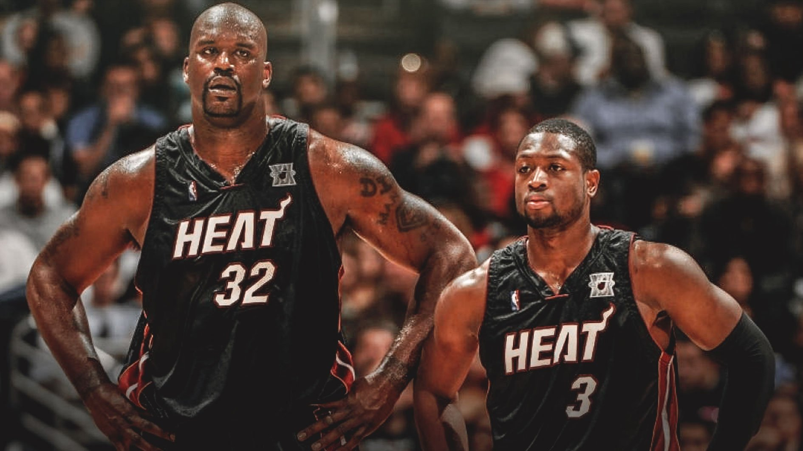

О Шакиле О'Ниле
Шакил О'Нил, широко известный как "Шак", родился 6 марта 1972 года в Ньюарке, Нью-Джерси. Его рост — 216 см, а вес в пике карьеры достигал 147 кг, что делало его одним из самых крупных и доминирующих игроков в истории баскетбола. С самого начала его карьеры было очевидно, что Шак станет звездой не только на площадке, но и за её пределами.
Шакил рос в семье, где дисциплина была на первом месте — его отчим, Филипп Харрисон, был сержантом армии США. Именно отчим привил Шаку страсть к баскетболу, сделав его работу над собой ключевым аспектом его жизни. Детство Шака проходило в военных гарнизонах, что научило его стойкости и упорству.
Будучи подростком, Шак уже был невероятно талантливым игроком. Во время обучения в средней школе Роберта Г. Коул в Сан-Антонио, Техас, он помог своей команде выиграть чемпионат штата, привлекая к себе внимание скаутов колледжей и НБА. После этого он поступил в Университет штата Луизиана (LSU), где быстро стал звездой студенческой лиги, заслужив звание лучшего игрока года.
На драфте НБА 1992 года Шакил был выбран первым номером командой "Орландо Мэджик".
Шак — это не только игрок, но и личность, которая всегда выделялась своим харизматичным поведением. За пределами баскетбольной площадки он стал поп-культурной иконой, появляясь в фильмах, записывая музыкальные альбомы, принимая участие в многочисленных телевизионных шоу. Его харизма и чувство юмора сделали его одним из самых популярных и узнаваемых спортсменов своего времени.
За годы своей профессиональной карьеры Шакил также стал известен как человек, который умел находить баланс между развлечением и профессионализмом. Несмотря на своё развлекательное поведение, он всегда подходил к игре с полной серьёзностью, нацеленностью на победу и готовностью вкладываться на 100% в каждую игру. Его уникальная комбинация физических данных, баскетбольных навыков и харизматической личности сделала его одним из самых узнаваемых лиц в истории спорта.
За пределами спорта Шакил О'Нил активно занимается благотворительностью, поддерживая детские программы, образовательные инициативы и спорт в неблагополучных районах. Он часто выступает с мотивационными речами для молодых людей, вдохновляя их на достижение успеха и на достижение своих целей, как в спорте, так и за его пределами.
Карьера и достижения
Карьера Шакила О'Нила в НБА началась в 1992 году, когда он был выбран под первым номером на драфте командой "Орландо Мэджик". Уже в дебютном сезоне Шак доказал, что он станет силой, с которой придётся считаться в будущем. В своем первом сезоне он получил награду Новичок года, установив множество рекордов для новичков и помог "Орландо Мэджик" значительно улучшить их результаты. Он стал первым новичком, который был выбран для участия в Матче всех звёзд с 1985 года.
Лос-Анджелес Лейкерс: Путь к легенде
В 1996 году Шакил О'Нил перешёл в "Лос-Анджелес Лейкерс" в статусе свободного агента, подписав контракт на сумму $121 миллион. Этот трансфер изменил его карьеру и привёл к доминированию "Лейкерс" в начале 2000-х. В тандеме с Коби Брайантом, Шак привёл команду к трём подряд чемпионским титулам в 2000, 2001 и 2002 годах. В 2000 году Шакил получил звание Самого ценного игрока (MVP) регулярного чемпионата, что стало венцом его доминирующей игры. Он также был признан MVP Финалов НБА три года подряд — 2000, 2001, и 2002 годах, что сделало его одной из главных звезд той эпохи.
Именно в "Лейкерс" Шакил закрепился как один из самых доминирующих центровых в истории НБА. Он был практически непобедим под кольцом, отличаясь невероятной комбинацией силы, атлетизма и техники. Благодаря своей мощной игре Шак стал символом новой эры баскетбола, где центровые вновь заняли главную роль в атаке.
Майами Хит и четвёртый титул
В 2004 году Шакил был обменян в "Майами Хит", где вместе с молодым Дуэйном Уэйдом помог команде завоевать свой первый чемпионский титул в 2006 году. Этот четвёртый чемпионский титул подтвердил статус Шакила как одного из величайших игроков в истории лиги. Несмотря на то, что его физическая форма начала постепенно ухудшаться, Шак продолжал оставаться одной из главных сил в лиге.
Сезон 2005-2006 стал кульминацией его карьеры в "Майами Хит". Он помог команде дойти до финала НБА, где "Хит" одержали победу над "Даллас Маверикс" в серии со счётом 4-2. Этот титул стал особенно важным для Шака, так как он доказал, что может побеждать и вне "Лейкерс".
Финикс Санс, Кливленд Кавальерс и Бостон Селтикс
После успешных лет в "Майами Хит" карьера Шака начала идти на спад. В 2008 году он был обменян в "Финикс Санс", где провёл два сезона. Затем, в 2009 году, он перешёл в "Кливленд Кавальерс", чтобы попытаться выиграть чемпионство вместе с Леброном Джеймсом, но команда не смогла дойти до финала НБА.
Последним этапом его карьеры стал сезон 2010-2011 в "Бостон Селтикс". Несмотря на возраст и травмы, Шак всё ещё оставался значимой фигурой в НБА. После этого сезона он объявил о завершении карьеры, оставив неизгладимый след в истории баскетбола.

Наследие
Шакил О'Нил завершил свою карьеру в 2011 году с внушительным списком достижений. За время своей карьеры он набрал более 28 000 очков, сделал более 13 000 подборов и 2 700 блок-шотов. Он стал 15-кратным участником Матча всех звёзд, 4-кратным чемпионом НБА и трёхкратным MVP Финалов, Олимпийский чемпион (1996),чемпион мира 1994 года, занимает 4 место в списке лучших центровых и 8 место лучших бомбардиров за всю историю НБА. В 2016 году он был введён в Зал славы баскетбола, подтвердив свой статус одного из величайших игроков в истории.
Шак стал символом баскетбольной доминации, человеком, который не только достиг невероятных успехов на площадке, но и вдохновил целое поколение игроков. Его физическая мощь, техника и лидерство сделали его одним из самых уважаемых и легендарных игроков НБА. Несмотря на свою громадную фигуру, он был известен своим мягким характером и чувством юмора, что сделало его любимцем болельщиков и коллег.
Шак снялся в таких фильмах, как Одноклассники 2 и Очень страшное кино 4.
Он также известен как рэп-исполнитель — его первый альбом Shaq Diesel стал платиновым.
О'Нил имеет степень доктора педагогических наук, полученную в Университете Барри в 2012 году.
Он активно занимается бизнесом, инвестируя в различные компании, включая сеть ресторанов и спортивные клубы.
Шак является ведущим аналитиком на телевидении в передаче NBA on TNT.
В 2020 году он был введён в Зал славы развлечений WWE, что подтверждает его популярность за пределами баскетбола.
Шак имеет лицензию на работу полицейским в Майами-Бич и Лос-Анджелесе.